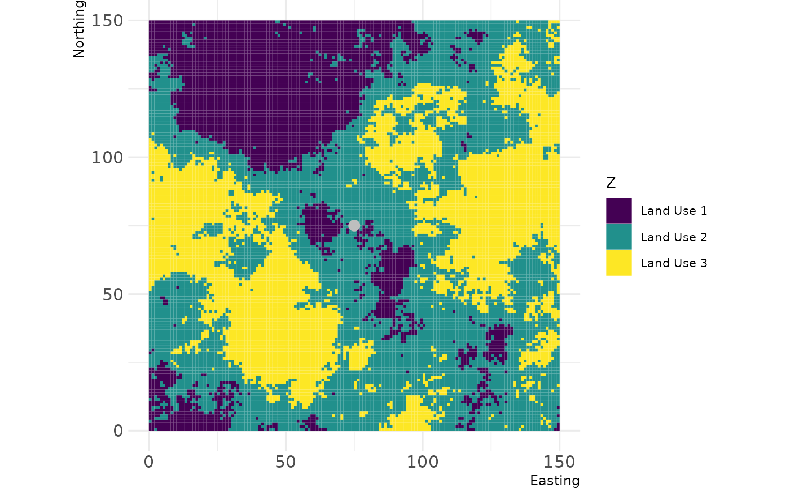

Extract raster values for multiple buffers
Source:R/util_extract_multibuffer.R
util_extract_multibuffer.RdThis function creates a series of circular buffers around spatial points and computes
the frequency of each value of a raster within the buffers; the results are printed in
a data.frame.
Usage
util_extract_multibuffer(
landscape,
points,
buffer_width,
max_width = NULL,
rel_freq = FALSE,
fun = NULL,
point_id_text = TRUE,
...
)Arguments
- landscape
Raster*object- points
Point(s) represented by a two-column matrix or
data.frame;SpatialPoints*;SpatialPolygons*;SpatialLines;Extent; a numeric vector representing cell numbers; orsf*POINT object.- buffer_width
Buffer widths in which the frequency of landscape values is measured. It might be either a single value or a vector of buffer sizes, if
max_width = NULL(default). If a value if provided formax_width, a series of buffer sizes is created, frombuffer_widthtomax_width, with increases ofbuffer_width.- max_width
Maximum distance to which buffer_width is summed up. If
NULL,buffer_widthis interpreted as a series of buffer widths.- rel_freq
Logical. If
TRUE, the relative frequency of raster values is also returned, besides the absolute frequency. Ignored iffunis provided.- fun
Function to apply to raster values within the buffer (e.g. "median", "mean").
- point_id_text
Logical. If
TRUE, the string "Point ID:" is added to the first column of the output.- ...
additional arguments (none implemented)
Value
A tibble with the frequency of each raster value within the buffers of different sizes
around each point. Alternatively, a tibble with the relative frequency of raster values, if rel_freq = TRUE,
or a function from the raster values, if fun is provided.
Examples
# create single point
new_point = matrix(c(75,75), ncol = 2)
# show landscape and point of interest
show_landscape(classified_landscape, discrete = TRUE) +
ggplot2::geom_point(data = data.frame(x = new_point[,1], y = new_point[,2]),
ggplot2::aes(x = x, y = y),
col = "grey", size = 3)

# extract frequency of each pixel value within each buffer from 10 to 50 m width
util_extract_multibuffer(classified_landscape, new_point, 10, 50)
#> # A tibble: 14 × 4
#> id layer freq buffer
#> <chr> <fct> <int> <dbl>
#> 1 Point ID: 1 1 80 10
#> 2 Point ID: 1 2 236 10
#> 3 Point ID: 1 1 292 20
#> 4 Point ID: 1 2 964 20
#> 5 Point ID: 1 3 8 20
#> 6 Point ID: 1 1 484 30
#> 7 Point ID: 1 2 1898 30
#> 8 Point ID: 1 3 446 30
#> 9 Point ID: 1 1 825 40
#> 10 Point ID: 1 2 2810 40
#> 11 Point ID: 1 3 1389 40
#> 12 Point ID: 1 1 1362 50
#> 13 Point ID: 1 2 3750 50
#> 14 Point ID: 1 3 2748 50
# use irregular buffer sizes
util_extract_multibuffer(classified_landscape, new_point, c(5, 10, 20, 30))
#> # A tibble: 10 × 4
#> id layer freq buffer
#> <chr> <fct> <int> <dbl>
#> 1 Point ID: 1 1 19 5
#> 2 Point ID: 1 2 61 5
#> 3 Point ID: 1 1 80 10
#> 4 Point ID: 1 2 236 10
#> 5 Point ID: 1 1 292 20
#> 6 Point ID: 1 2 964 20
#> 7 Point ID: 1 3 8 20
#> 8 Point ID: 1 1 484 30
#> 9 Point ID: 1 2 1898 30
#> 10 Point ID: 1 3 446 30
# also returns relative frequency
util_extract_multibuffer(classified_landscape, new_point, 10, 50, rel_freq = TRUE)
#> # A tibble: 14 × 5
#> id layer freq rel_freq buffer
#> <chr> <fct> <int> <dbl> <dbl>
#> 1 Point ID: 1 1 80 0.253 10
#> 2 Point ID: 1 2 236 0.747 10
#> 3 Point ID: 1 1 292 0.231 20
#> 4 Point ID: 1 2 964 0.763 20
#> 5 Point ID: 1 3 8 0.00633 20
#> 6 Point ID: 1 1 484 0.171 30
#> 7 Point ID: 1 2 1898 0.671 30
#> 8 Point ID: 1 3 446 0.158 30
#> 9 Point ID: 1 1 825 0.164 40
#> 10 Point ID: 1 2 2810 0.559 40
#> 11 Point ID: 1 3 1389 0.276 40
#> 12 Point ID: 1 1 1362 0.173 50
#> 13 Point ID: 1 2 3750 0.477 50
#> 14 Point ID: 1 3 2748 0.350 50
# use a given function - e.g. median in each buffer width
util_extract_multibuffer(classified_landscape, new_point, 10, 50, fun = "median")
#> # A tibble: 5 × 4
#> id layer median buffer
#> <chr> <fct> <int> <dbl>
#> 1 Point ID: 1 2 1 10
#> 2 Point ID: 1 2 1 20
#> 3 Point ID: 1 2 1 30
#> 4 Point ID: 1 2 1 40
#> 5 Point ID: 1 2 1 50
# show multiple points share
new_points = matrix(c(75, 110, 75, 30), ncol = 2)
util_extract_multibuffer(classified_landscape, new_points, c(5, 10, 20, 30))
#> # A tibble: 24 × 4
#> id layer freq buffer
#> <chr> <fct> <int> <dbl>
#> 1 Point ID: 1 1 19 5
#> 2 Point ID: 2 1 7 5
#> 3 Point ID: 1 2 61 5
#> 4 Point ID: 2 2 68 5
#> 5 Point ID: 1 3 0 5
#> 6 Point ID: 2 3 5 5
#> 7 Point ID: 1 1 80 10
#> 8 Point ID: 2 1 38 10
#> 9 Point ID: 1 2 236 10
#> 10 Point ID: 2 2 266 10
#> # ℹ 14 more rows